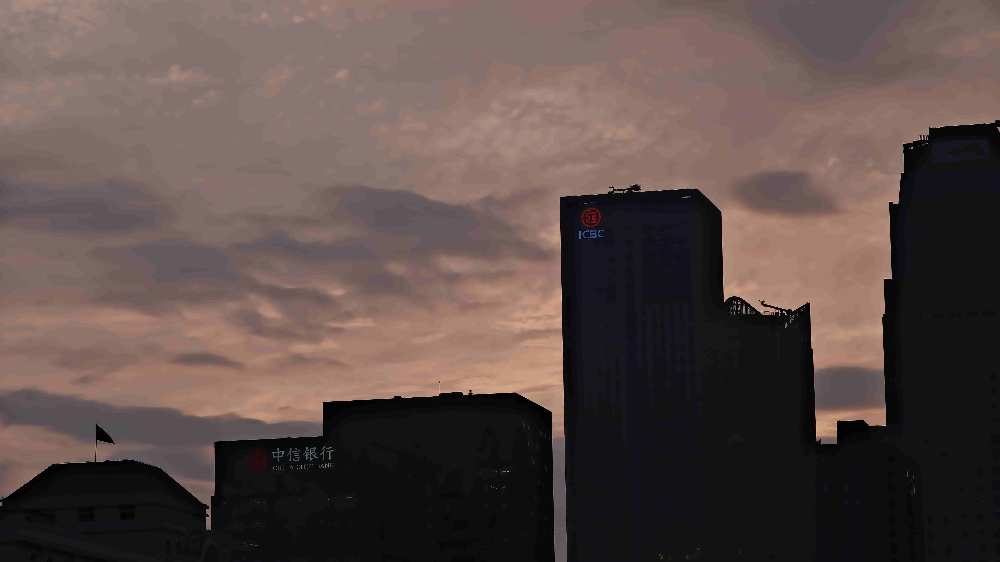
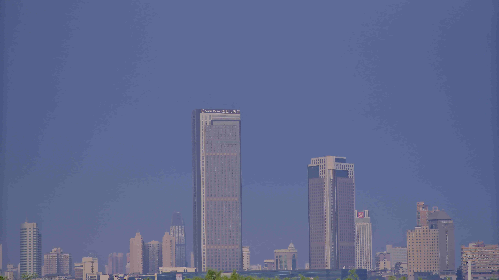
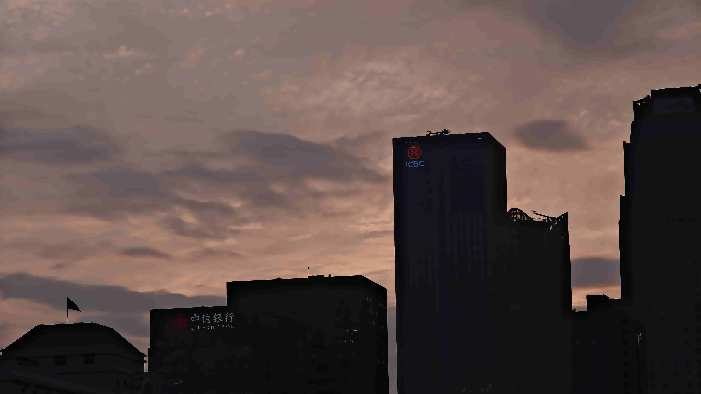
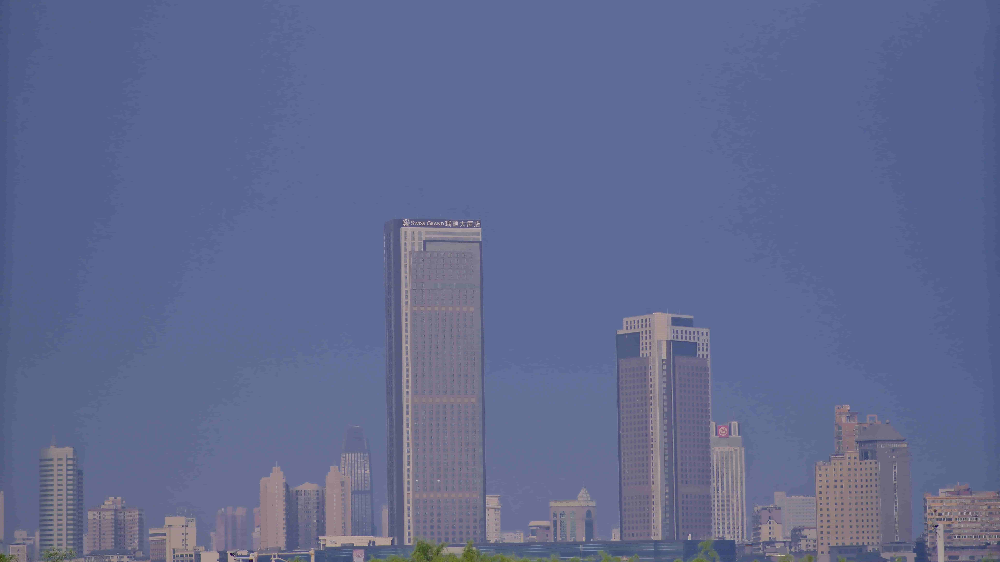

欢迎来到我们的摄影工作室！我们是一支专注于创造精美摄影作品的团队，致力于捕捉美丽瞬间和表达独特故事的摄影师和艺术家。
我们的工作室提供广泛的摄影服务，包括人像摄影、婚礼摄影、家庭摄影、商业摄影等。无论您需要个人肖像、浪漫婚纱照、温馨全家福还是专业商业形象，我们都能为您创造出令人难忘的影像。
我们的团队具备丰富的摄影经验和专业知识，以及先进的摄影设备和后期处理技术。我们注重细节和创意，并努力与每位客户合作，以理解他们的愿望和需求，确保提供最佳的摄影体验和满意度。
我们的摄影工作室追求卓越和艺术性，并且不断追求创新。我们通过巧妙运用光线、色彩和构图等元素，创造出独特的视觉效果和情感表达。我们致力于呈现每个人的美丽、故事和个性，使每张照片都成为独特的艺术品。
我们热爱摄影，享受与每个客户一起创造独特的摄影作品。我们的目标是通过我们的摄影艺术，为您带来难忘的瞬间，并让您感到满意和骄傲。无论是特殊场合还是日常生活，我们愿意与您合作，捕捉并留存珍贵的回忆。
如果您正在寻找专业而富有创意的摄影服务，欢迎您来到我们的工作室。让我们一起创造出精美而难忘的摄影作品，为您带来美丽和喜悦！


我们提供各种类型的摄影服务，包括婚礼摄影、商业摄影和个人摄影。
我们提供专业的后期制作服务，让您的照片更加精美。
 





地址：湖南省长沙市
电话：13142086210
电子邮件：502780445@qq.com